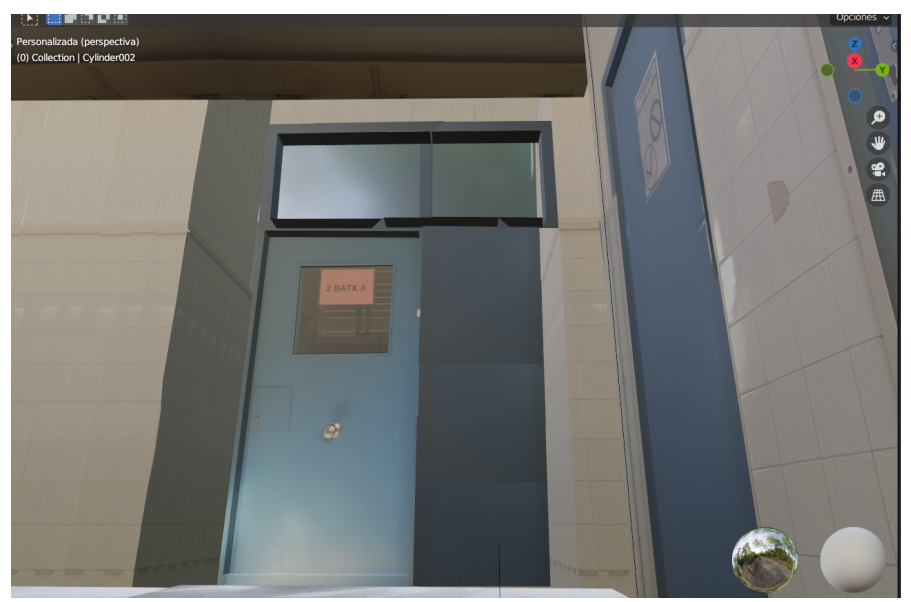

Descripción del proyecto
"Un Mundo Simulado" es un proyecto que explora la creación de entornos virtuales y su simulación, con un enfoque especial en la evolución de la tecnología en este campo. El proyecto busca demostrar cómo se pueden replicar espacios y actividades del mundo real utilizando técnicas de simulación digital.
- Objetivo del proyecto: Entender cómo funciona la simulación virtual y cómo se ha desarrollado a lo largo de la historia, con especial énfasis en las aplicaciones prácticas y tecnológicas actuales.
- Tecnologías utilizadas: El proyecto emplea herramientas como Blender para el modelado 3D, así como técnicas como los cube maps y el photobashing para reducir la carga gráfica y mejorar el rendimiento en dispositivos móviles.
- Desafíos enfrentados: Uno de los principales desafíos fue optimizar la simulación para que pudiera ser visualizada en dispositivos de bajo rendimiento, lo que llevó a la elección de técnicas ligeras como las skyboxes. Otro reto fue la limitación del hardware disponible, lo que requirió soluciones creativas para lograr una simulación convincente.
- Resultados obtenidos: Se logró la recreación de varios entornos del instituto, tanto exteriores como interiores, mediante la combinación de técnicas 3D y fotografía. El resultado fue una simulación realista accesible desde cualquier dispositivo con conexión a internet.
Código fuente
El código fuente del proyecto, así como los modelos 3D y las texturas utilizadas, están disponibles en el siguiente enlace (o eso es lo que hubiera dicho si no hubiera perdido el proyecto en el pasado y no solo me hubiera quedado con mi pdf sin el blender ni los modelos :( ):
Ver código en GitHub

Funcionalidades
El proyecto incluye las siguientes funcionalidades principales:
- Simulación 3D de entornos reales utilizando skyboxes y photobashing para lograr un resultado visualmente atractivo y de bajo consumo de recursos.
- Interacción a través de un recorrido virtual que permite al usuario explorar los espacios simulados mediante nodos conectados.
- Acceso desde dispositivos móviles y ordenadores, facilitando su uso en diversas plataformas.
Puedes ver una demostración interactiva del proyecto haciendo clic (eso también sería lo que hubiera dicho si la página con la que hice mi proyecto no le hubieran comprado el dominio y no la hubieran convertido en un casino :( asi que el enlace funciona, pero ya no es lo que era aquí.